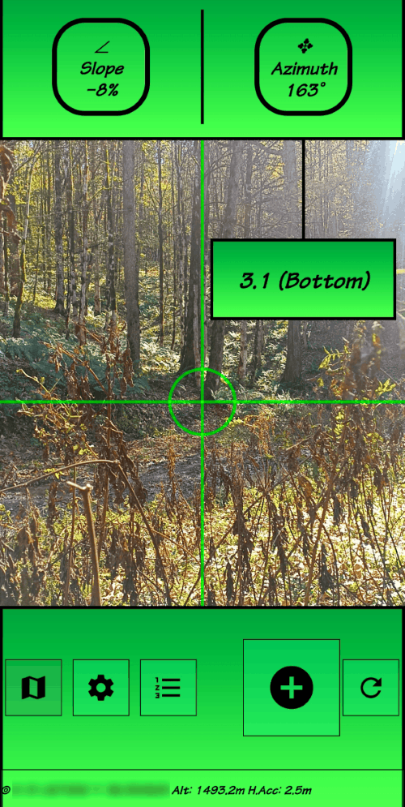
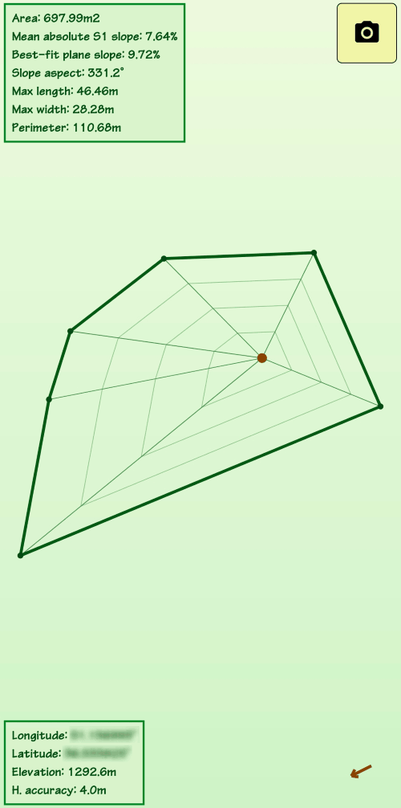

Introducing Canopy Gap
Canopy Gap is a smartphone-based application developed to measure and analyze the geometric and topographic characteristics of forest canopy gaps. It provides a practical field-based approach to collecting spatial measurements using built-in smartphone sensors, without requiring specialized surveying equipment.
The application combines a smartphone camera, orientation sensors, and GPS to determine canopy-gap boundaries from a fixed observation point. By measuring selected points along the gap boundary in different directions, it estimates the horizontal area, maximum length and width, and perimeter of the canopy gap.
Canopy Gap supports different measurement configurations, including 4-direction, 8-direction, and free measurement modes. It also provides options for working on flat and sloping terrain, allowing measurements to be adapted to different field conditions.
In addition to gap geometry, the application records topographic information, including mean slope, best-fit plane slope, and slope aspect. GPS integration enables recording geographic coordinates, elevation, and horizontal positioning accuracy for each measurement.
Following measurement completion, the application generates a visual representation of the measured gap geometry, including a 3D visualization of its boundary and topographic characteristics. The measurement results can be saved for subsequent examination and use in forest research.
Canopy Gap is intended as a field tool for forest ecologists, researchers, and students interested in canopy-gap structure, forest dynamics, and the spatial characteristics of forest ecosystems. It aims to make field measurements more accessible while providing a consistent approach to documenting canopy-gap geometry and topography.


Key Features
Gap Geometry
Estimation of horizontal area, maximum length and width, and perimeter.
Topographic Analysis
Calculation of mean slope, best-fit plane slope, and slope aspect.
GPS Integration
Recording geographic coordinates, elevation, and horizontal positioning accuracy.
Flexible Measurements
4-direction, 8-direction, and free measurement modes.
Measurement Approach
Users stand at a fixed observation point near the center of the canopy gap and manually measure selected points along its boundary using the smartphone camera and orientation sensors.
The application supports measurements on both approximately flat and sloping terrain, with configurable measurement settings that allow users to adapt the measurement procedure to different field conditions.